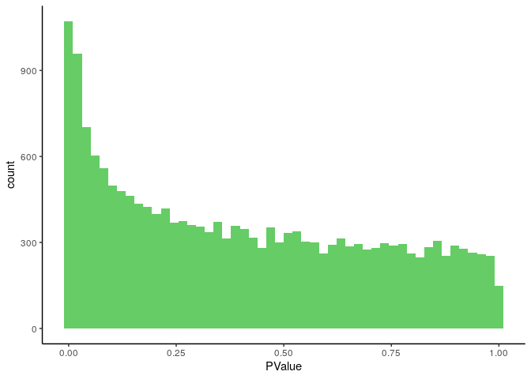
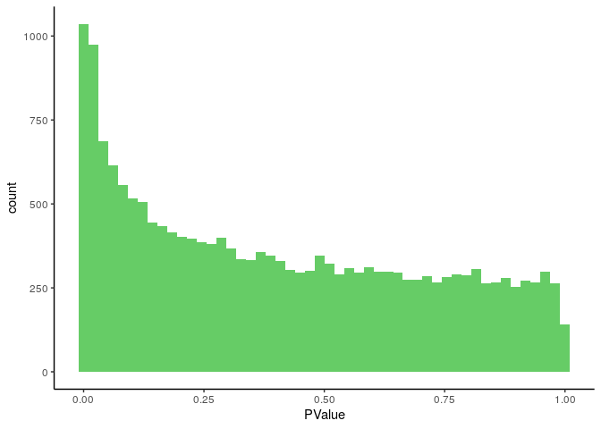
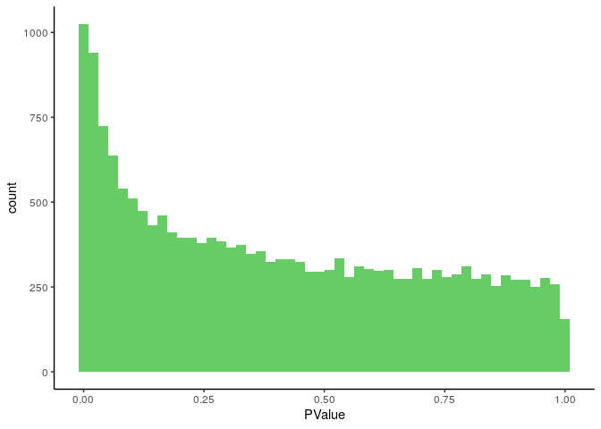

Last updated: 2021-12-29
Checks: 7 0
Knit directory: rta/
This reproducible R Markdown analysis was created with workflowr (version 1.6.2). The Checks tab describes the reproducibility checks that were applied when the results were created. The Past versions tab lists the development history.
Great! Since the R Markdown file has been committed to the Git repository, you know the exact version of the code that produced these results.
Great job! The global environment was empty. Objects defined in the global environment can affect the analysis in your R Markdown file in unknown ways. For reproduciblity it’s best to always run the code in an empty environment.
The command set.seed(20200501) was run prior to running the code in the R Markdown file. Setting a seed ensures that any results that rely on randomness, e.g. subsampling or permutations, are reproducible.
Great job! Recording the operating system, R version, and package versions is critical for reproducibility.
Nice! There were no cached chunks for this analysis, so you can be confident that you successfully produced the results during this run.
Great job! Using relative paths to the files within your workflowr project makes it easier to run your code on other machines.
Great! You are using Git for version control. Tracking code development and connecting the code version to the results is critical for reproducibility.
The results in this page were generated with repository version 14d61ce. See the Past versions tab to see a history of the changes made to the R Markdown and HTML files.
Note that you need to be careful to ensure that all relevant files for the analysis have been committed to Git prior to generating the results (you can use wflow_publish or wflow_git_commit). workflowr only checks the R Markdown file, but you know if there are other scripts or data files that it depends on. Below is the status of the Git repository when the results were generated:
Ignored files:
Ignored: .Rhistory
Ignored: .Rproj.user/
Ignored: analysis/figure/
Ignored: code/.Rapp.history
Ignored: data/.Rhistory
Ignored: data/RDS/
Ignored: run/
Untracked files:
Untracked: LICENSE
Untracked: Untitled.R
Untracked: analysis/17_mapping_interpretation_old.Rmd
Untracked: analysis/temp.txt
Untracked: code/DO_eQTL_perms.R
Untracked: code/DO_eQTL_score_calc.R
Untracked: code/STAR_RSEM_416.sh
Untracked: code/eQTL_plotting_DO_striatum_416.R
Untracked: code/ggplot_pub_themes.R
Untracked: data/20_elastic_mv_results.csv
Untracked: data/20_elasticnet_predictions.RDS
Untracked: data/DO_416_DGEList.RDS
Untracked: data/DO_416_DGEList_unfiltered (michael.saul@jax.org 2).RDS
Untracked: data/DO_416_DGEList_unfiltered (michael.saul@jax.org 3).RDS
Untracked: data/DO_416_DGEList_unfiltered (michael.saul@jax.org 4).RDS
Untracked: data/DO_416_DGEList_unfiltered (michael.saul@jax.org).RDS
Untracked: data/DO_416_DGEList_unfiltered.RDS
Untracked: data/DO_416_ERCC_DGEList.RDS
Untracked: data/DO_416_ERCC_cpm.RDS
Untracked: data/DO_416_normrt.RDS
Untracked: data/DO_416_pheno.RDS
Untracked: data/DO_416_pheno_allgenes.RDS
Untracked: data/DO_416_voom (michael.saul@jax.org).RDS
Untracked: data/DO_416_voom.RDS
Untracked: data/DO_416_voom_allgenes (michael.saul@jax.org 2).RDS
Untracked: data/DO_416_voom_allgenes (michael.saul@jax.org).RDS
Untracked: data/DO_416_voom_allgenes.RDS
Untracked: data/DO_416_voom_cpresiduals.RDS
Untracked: data/DO_AQ_active_CoV_toptable_annotated.RDS
Untracked: data/DO_AQ_lever_ratio_toptable_annotated.RDS
Untracked: data/DO_AQ_mean_inf_toptable_annotated.RDS
Untracked: data/DO_AQ_rate_toptable_annotated.RDS
Untracked: data/DO_IVSA_acquisition_cancor_df.RDS
Untracked: data/DO_IVSA_acquisition_logit_df.RDS
Untracked: data/DO_IVSA_acquisition_logit_glm.RDS
Untracked: data/DO_IVSA_all_cancor_df.RDS
Untracked: data/DO_IVSA_data.RDS
Untracked: data/DO_IVSA_novelty_cancor_ALL.RDS
Untracked: data/DO_IVSA_novelty_cancor_AQ.RDS
Untracked: data/DO_IVSA_novelty_data.RDS
Untracked: data/DO_IVSA_prediction_ACQUISITION_logit.RDS
Untracked: data/DO_IVSA_prediction_ACQUISITION_logit_2021-01-04.RDS
Untracked: data/DO_IVSA_prediction_ALL_cancor.RDS
Untracked: data/DO_IVSA_prediction_ALL_cancor_2021-01-04.RDS
Untracked: data/DO_IVSA_prediction_ALL_cancor_old.RDS
Untracked: data/DO_IVSA_prediction_AQ_cancor.RDS
Untracked: data/DO_IVSA_prediction_AQ_cancor_2021-01-04.RDS
Untracked: data/DO_IVSA_prediction_a1_ACQUISITION_logit.RDS
Untracked: data/DO_IVSA_prediction_a2_AQ_cancor.RDS
Untracked: data/DO_IVSA_prediction_a3_ALL_cancor.RDS
Untracked: data/DO_IVSA_prediction_a4_male_ALL_cancor.RDS
Untracked: data/DO_IVSA_prediction_a5_female_ALL_cancor.RDS
Untracked: data/DO_IVSA_raw_data.RDS
Untracked: data/DO_IVSA_transformed_data.RDS
Untracked: data/DO_LIMS_data.RDS
Untracked: data/DO_RTG_a1_new.qtl.RData
Untracked: data/DO_RTG_a1_new_1000x.qtlpermu.RData
Untracked: data/DO_RTG_a1_new_mapping_1000x.RData
Untracked: data/DO_RTG_a2_new.qtl.RData
Untracked: data/DO_RTG_a2_new_1000x.qtlpermu.RData
Untracked: data/DO_RTG_a2_new_mapping_1000x.RData
Untracked: data/DO_RTG_a3_new.qtl.RData
Untracked: data/DO_RTG_a3_new_1000x.qtlpermu.RData
Untracked: data/DO_RTG_a3_new_mapping_1000x_01.RData
Untracked: data/DO_RTG_a3_new_mapping_1000x_02.RData
Untracked: data/DO_RTG_a4_new.qtl.RData
Untracked: data/DO_RTG_a5_new.qtl.RData
Untracked: data/DO_RTG_elasticnet_new.qtl.RData
Untracked: data/DO_RTG_elasticnet_new_mapping_1000x.RData
Untracked: data/DO_RTG_project_df_for_mapping.RDS
Untracked: data/DO_RTG_project_df_for_mapping_2020-11-06.RDS
Untracked: data/DO_RTG_project_df_for_mapping_a2.RDS
Untracked: data/DO_RTG_project_df_for_mapping_sexspecific.RDS
Untracked: data/DO_demographic_data_df.RDS
Untracked: data/DO_eigengene_significance.RDS
Untracked: data/DO_eigengenes.RDS
Untracked: data/DO_highcor_cpresiduals_datatable.RDS
Untracked: data/DO_holeboard_data_df.RDS
Untracked: data/DO_holeboard_summarized.RDS
Untracked: data/DO_lightdark_data_df.RDS
Untracked: data/DO_mQTL_peaks.RDS
Untracked: data/DO_mQTL_scan1s.RDS
Untracked: data/DO_module_membership.RDS
Untracked: data/DO_novelplace_data_df.RDS
Untracked: data/DO_novelty_data.RDS
Untracked: data/DO_novelty_response_data.RDS
Untracked: data/DO_novelty_response_data_for_RTG.RDS
Untracked: data/DO_novelty_response_data_with_transform.csv
Untracked: data/DO_openfield_data_df.RDS
Untracked: data/DO_paraclique_data.el
Untracked: data/DO_paraclique_eigengenes.RDS
Untracked: data/DO_paracliques.RDS
Untracked: data/DO_paracliques_significance.RDS
Untracked: data/DO_ploidy_calls.RDS
Untracked: data/DO_pmap.RDS
Untracked: data/DO_pvalue_histograms.RData
Untracked: data/DO_rtg_a1_toptable_annotated.RDS
Untracked: data/DO_rtg_a2_toptable_annotated.RDS
Untracked: data/DO_rtg_a3_toptable_annotated.RDS
Untracked: data/DO_rtg_m1_toptable_annotated.RDS
Untracked: data/DO_rtg_m2_toptable_annotated.RDS
Untracked: data/DO_rtg_m3_toptable_annotated.RDS
Untracked: data/DO_str_2016_eQTL.RData
Untracked: data/DO_str_2016_gm4qtl2.zip
Untracked: data/DO_str_2016_gm4qtl2_intensities.fst
Untracked: data/DO_voom_cpresiduals_NArm.RDS
Untracked: data/DO_wgcna.RDS
Untracked: data/IVSA_RTG_a3_blup.pdf
Untracked: data/IVSA_h2_2019-11-18.tsv
Untracked: data/IVSA_metadata_sheet.RDS
Untracked: data/ME16_edges.tsv
Untracked: data/Mus_musculus.GRCm38.94.parsed.RDS
Untracked: data/Paraclique_19_MF_AMIGO.txt
Untracked: data/RTG_QTL_peaks.RDS
Untracked: data/RTG_figure.RDS
Untracked: data/SENS_RTG/
Untracked: data/Tyr2_genotypes.RDS
Untracked: data/Tyr_genotypes.RDS
Untracked: data/blup_chr7_DO_RTG_a3.RDS
Untracked: data/cc_variants/
Untracked: data/chr18_QTL_results.RDS
Untracked: data/chr4_QTL_results.RDS
Untracked: data/chr7_a3_QTL_results.RDS
Untracked: data/cis/
Untracked: data/eQTL_annotated_peaks.RDS
Untracked: data/eQTL_plots.RData
Untracked: data/figures/
Untracked: data/founders_key/
Untracked: data/gigamuga/
Untracked: data/gwas/
Untracked: data/info/
Untracked: data/m2G.a2.RTG.chr4snp.RData
Untracked: data/mapping_from_hao/
Untracked: data/perms/
Untracked: data/qtl2/
Untracked: data/raw/
Untracked: data/resources/
Untracked: data/tads_loops/
Untracked: data/transcripts/
Untracked: data/variants/
Untracked: logs/
Untracked: new_RTG_a3.jpeg
Untracked: output/RTG_out/
Untracked: output/docs_backup_2020-07-30.tar.gz
Untracked: output/elastic_net_out/
Untracked: rstudio_rta.sif
Untracked: singularity/
Untracked: tmp/
Untracked: var/
Unstaged changes:
Deleted: .Rprofile
Modified: .gitignore
Modified: README.md
Modified: analysis/_site.yml
Modified: analysis/about.Rmd
Note that any generated files, e.g. HTML, png, CSS, etc., are not included in this status report because it is ok for generated content to have uncommitted changes.
These are the previous versions of the repository in which changes were made to the R Markdown (analysis/21_DO_elasticnet_correlation.Rmd) and HTML (docs/21_DO_elasticnet_correlation.html) files. If you’ve configured a remote Git repository (see ?wflow_git_remote), click on the hyperlinks in the table below to view the files as they were in that past version.
| File | Version | Author | Date | Message |
|---|---|---|---|---|
| Rmd | 14d61ce | Michael C. Saul | 2021-12-29 | Committing for Sumner |
This script is used to correlate elastic net predictions from Robyn Ball to expression.
Calling R libraries necessary for this analysis.
library("limma")
library("edgeR")
library("ggplot2")
library("biomaRt")
library("statmod")
library("qvalue")
library("msaul")
library("WGCNA")Loading required package: dynamicTreeCutLoading required package: fastcluster
Attaching package: 'fastcluster'The following object is masked from 'package:stats':
hclust
Attaching package: 'WGCNA'The following object is masked from 'package:qvalue':
qvalueThe following object is masked from 'package:stats':
cornorm_rank_transform() functionGetting a normal rank transformation function that can handle NA values.
norm_rank_transform = function(x, c = (0)) {
stopifnot(is.numeric(x) & is.vector(x))
x_noNA = which(!is.na(x))
N = length(x_noNA)
x[x_noNA] = qnorm((rank(x[x_noNA], ties.method = "average") - c) / (N - (2 * c) + 1))
return(x)
}Importing data.
DO_pheno = readRDS("./data/DO_416_pheno.RDS")
DO_dge = readRDS("./data/DO_416_DGEList.RDS")
DO_elasticnet = readRDS("./data/20_elasticnet_predictions.RDS")DO_pheno$pred_AQ_lever_ratio = DO_elasticnet[row.names(DO_pheno),"AQ_lever_ratio"]
DO_pheno$pred_AQ_mean_inf = DO_elasticnet[row.names(DO_pheno),"AQ_mean_inf"]
DO_pheno$pred_AQ_active_CoV = DO_elasticnet[row.names(DO_pheno),"AQ_active_CoV"]
DO_pheno$pred_AQ_rate = DO_elasticnet[row.names(DO_pheno),"AQ_rate"]
has_AQ_lever_ratio_express = row.names(DO_pheno[which((!is.na(DO_pheno[,"pred_AQ_lever_ratio"])) & (DO_pheno$Sex == "M" | DO_pheno$Sex == "F")),])
has_AQ_mean_inf_express = row.names(DO_pheno[which((!is.na(DO_pheno[,"pred_AQ_mean_inf"])) & (DO_pheno$Sex == "M" | DO_pheno$Sex == "F")),])
has_AQ_active_CoV_express = row.names(DO_pheno[which((!is.na(DO_pheno[,"pred_AQ_active_CoV"])) & (DO_pheno$Sex == "M" | DO_pheno$Sex == "F")),])
has_AQ_rate_express = row.names(DO_pheno[which((!is.na(DO_pheno[,"pred_AQ_rate"])) & (DO_pheno$Sex == "M" | DO_pheno$Sex == "F")),])
paste("There are ",length(has_AQ_lever_ratio_express)," samples with both predicted lever ratio and expression data.",sep="")[1] "There are 383 samples with both predicted lever ratio and expression data."paste("There are ",length(has_AQ_mean_inf_express)," samples with both predicted mean infusion and expression data.",sep="")[1] "There are 383 samples with both predicted mean infusion and expression data."paste("There are ",length(has_AQ_active_CoV_express)," samples with both preditcted CoV of IEI and expression data.",sep="")[1] "There are 383 samples with both preditcted CoV of IEI and expression data."paste("There are ",length(has_AQ_rate_express)," samples with both predicted rate of acquisition and expression data.",sep="")[1] "There are 383 samples with both predicted rate of acquisition and expression data."pred_AQ_lever_ratio analysis: setupGetting factors for pred_AQ_lever_ratio.
# Model factors for overall eigentraits
DO_AQ_lever_ratio_Generation = DO_pheno[has_AQ_lever_ratio_express,"Generation"]
DO_AQ_lever_ratio_ChoroidPlexus = DO_pheno[has_AQ_lever_ratio_express,"choroid_plexus_covariate"]
DO_AQ_lever_ratio_Sex = DO_pheno[has_AQ_lever_ratio_express,"Sex"]
DO_AQ_lever_ratio_Predict = DO_pheno[has_AQ_lever_ratio_express,"pred_AQ_lever_ratio"]
# Gene expression list for rtg trait
DO_AQ_lever_ratio_dge = DO_dge[,has_AQ_lever_ratio_express]Writing model matrix for this correlation.
DO_AQ_lever_ratio_modmat = model.matrix(~ DO_AQ_lever_ratio_ChoroidPlexus +
DO_AQ_lever_ratio_Sex +
DO_AQ_lever_ratio_Generation +
DO_AQ_lever_ratio_Predict)
colnames(DO_AQ_lever_ratio_modmat) = gsub("DO_AQ_lever_ratio_","",colnames(DO_AQ_lever_ratio_modmat))
colnames(DO_AQ_lever_ratio_modmat)[1] "(Intercept)" "ChoroidPlexus" "SexM" "GenerationG22"
[5] "GenerationG23" "Predict" Fitting the model for the DO_AQ_lever_ratio_modmat.
DO_AQ_lever_ratio_dge = estimateGLMRobustDisp(DO_AQ_lever_ratio_dge, design = DO_AQ_lever_ratio_modmat)
DO_AQ_lever_ratio_glmFit = glmFit(DO_AQ_lever_ratio_dge, design = DO_AQ_lever_ratio_modmat)Summarizing the genes correlated with predicted IVSA data using DO_AQ_lever_ratio_modmat.
DO_AQ_lever_ratio_toptable = as.data.frame(topTags(glmLRT(DO_AQ_lever_ratio_glmFit,
coef = grep("^Predict$", colnames(DO_AQ_lever_ratio_modmat))),
n = nrow(DO_AQ_lever_ratio_dge)))
DO_AQ_lever_ratio_toptable$qvalue = qvalue(DO_AQ_lever_ratio_toptable$PValue)$qvalues
paste(length(which(DO_AQ_lever_ratio_toptable$qvalue < 0.01)), " genes correlated with lever ratio prediction at q < 0.01.", sep = "")[1] "59 genes correlated with lever ratio prediction at q < 0.01."paste(length(which(DO_AQ_lever_ratio_toptable$qvalue < 0.05)), " genes correlated with lever ratio prediction at q < 0.05.", sep = "")[1] "314 genes correlated with lever ratio prediction at q < 0.05."paste(length(which(DO_AQ_lever_ratio_toptable$qvalue < 0.10)), " genes correlated with lever ratio prediction at q < 0.10.", sep = "")[1] "777 genes correlated with lever ratio prediction at q < 0.10."paste(length(which(DO_AQ_lever_ratio_toptable$qvalue < 0.20)), " genes correlated with lever ratio prediction at q < 0.20.", sep = "")[1] "2069 genes correlated with lever ratio prediction at q < 0.20."Plotting lever ratio p-value histogram.
DO_AQ_lever_ratio_hist = ggplot(data = DO_AQ_lever_ratio_toptable, aes(x = PValue)) +
geom_histogram(fill = "#66CC66", bins = 50) +
theme_classic()
DO_AQ_lever_ratio_hist
pred_AQ_mean_inf analysis: setupGetting factors for pred_AQ_mean_inf.
# Model factors
DO_AQ_mean_inf_Generation = DO_pheno[has_AQ_mean_inf_express,"Generation"]
DO_AQ_mean_inf_ChoroidPlexus = DO_pheno[has_AQ_mean_inf_express,"choroid_plexus_covariate"]
DO_AQ_mean_inf_Sex = DO_pheno[has_AQ_mean_inf_express,"Sex"]
DO_AQ_mean_inf_Predict = DO_pheno[has_AQ_mean_inf_express,"pred_AQ_mean_inf"]
# Gene expression list for trait
DO_AQ_mean_inf_dge = DO_dge[,has_AQ_mean_inf_express]Writing model matrix for this correlation.
DO_AQ_mean_inf_modmat = model.matrix(~ DO_AQ_mean_inf_ChoroidPlexus +
DO_AQ_mean_inf_Sex +
DO_AQ_mean_inf_Generation +
DO_AQ_mean_inf_Predict)
colnames(DO_AQ_mean_inf_modmat) = gsub("DO_AQ_mean_inf_","",colnames(DO_AQ_mean_inf_modmat))
colnames(DO_AQ_mean_inf_modmat)[1] "(Intercept)" "ChoroidPlexus" "SexM" "GenerationG22"
[5] "GenerationG23" "Predict" Fitting the model for the DO_AQ_mean_inf_modmat.
DO_AQ_mean_inf_dge = estimateGLMRobustDisp(DO_AQ_mean_inf_dge, design = DO_AQ_mean_inf_modmat)
DO_AQ_mean_inf_glmFit = glmFit(DO_AQ_mean_inf_dge, design = DO_AQ_mean_inf_modmat)Summarizing the genes correlated with predicted IVSA data using DO_AQ_mean_inf_modmat.
DO_AQ_mean_inf_toptable = as.data.frame(topTags(glmLRT(DO_AQ_mean_inf_glmFit,
coef = grep("^Predict$", colnames(DO_AQ_mean_inf_modmat))),
n = nrow(DO_AQ_mean_inf_dge)))
DO_AQ_mean_inf_toptable$qvalue = qvalue(DO_AQ_mean_inf_toptable$PValue)$qvalues
paste(length(which(DO_AQ_mean_inf_toptable$qvalue < 0.01)), " genes correlated with mean infusion prediction at q < 0.01.", sep = "")[1] "55 genes correlated with mean infusion prediction at q < 0.01."paste(length(which(DO_AQ_mean_inf_toptable$qvalue < 0.05)), " genes correlated with mean infusion prediction at q < 0.05.", sep = "")[1] "328 genes correlated with mean infusion prediction at q < 0.05."paste(length(which(DO_AQ_mean_inf_toptable$qvalue < 0.10)), " genes correlated with mean infusion prediction at q < 0.10.", sep = "")[1] "743 genes correlated with mean infusion prediction at q < 0.10."paste(length(which(DO_AQ_mean_inf_toptable$qvalue < 0.20)), " genes correlated with mean infusion prediction at q < 0.20.", sep = "")[1] "1910 genes correlated with mean infusion prediction at q < 0.20."Plotting mean infusion p-value histogram.
DO_AQ_mean_inf_hist = ggplot(data = DO_AQ_mean_inf_toptable, aes(x = PValue)) +
geom_histogram(fill = "#66CC66", bins = 50) +
theme_classic()
DO_AQ_mean_inf_histpred_AQ_active_CoV analysis: setupGetting factors for pred_AQ_active_CoV.
# Model factors for overall eigentraits
DO_AQ_active_CoV_Generation = DO_pheno[has_AQ_active_CoV_express,"Generation"]
DO_AQ_active_CoV_ChoroidPlexus = DO_pheno[has_AQ_active_CoV_express,"choroid_plexus_covariate"]
DO_AQ_active_CoV_Sex = DO_pheno[has_AQ_active_CoV_express,"Sex"]
DO_AQ_active_CoV_Predict = DO_pheno[has_AQ_active_CoV_express,"pred_AQ_active_CoV"]
# Gene expression list for rtg trait
DO_AQ_active_CoV_dge = DO_dge[,has_AQ_active_CoV_express]Writing model matrix for this correlation.
DO_AQ_active_CoV_modmat = model.matrix(~ DO_AQ_active_CoV_ChoroidPlexus +
DO_AQ_active_CoV_Sex +
DO_AQ_active_CoV_Generation +
DO_AQ_active_CoV_Predict)
colnames(DO_AQ_active_CoV_modmat) = gsub("DO_AQ_active_CoV_","",colnames(DO_AQ_active_CoV_modmat))
colnames(DO_AQ_active_CoV_modmat)[1] "(Intercept)" "ChoroidPlexus" "SexM" "GenerationG22"
[5] "GenerationG23" "Predict" Fitting the model for the DO_AQ_active_CoV_modmat.
DO_AQ_active_CoV_dge = estimateGLMRobustDisp(DO_AQ_active_CoV_dge, design = DO_AQ_active_CoV_modmat)
DO_AQ_active_CoV_glmFit = glmFit(DO_AQ_active_CoV_dge, design = DO_AQ_active_CoV_modmat)Summarizing the genes correlated with predicted IVSA data using DO_AQ_active_CoV_modmat.
DO_AQ_active_CoV_toptable = as.data.frame(topTags(glmLRT(DO_AQ_active_CoV_glmFit,
coef = grep("^Predict$", colnames(DO_AQ_active_CoV_modmat))),
n = nrow(DO_AQ_active_CoV_dge)))
DO_AQ_active_CoV_toptable$qvalue = qvalue(DO_AQ_active_CoV_toptable$PValue)$qvalues
paste(length(which(DO_AQ_active_CoV_toptable$qvalue < 0.01)), " genes correlated with IEI CoV prediction at q < 0.01.", sep = "")[1] "56 genes correlated with IEI CoV prediction at q < 0.01."paste(length(which(DO_AQ_active_CoV_toptable$qvalue < 0.05)), " genes correlated with IEI CoV prediction at q < 0.05.", sep = "")[1] "304 genes correlated with IEI CoV prediction at q < 0.05."paste(length(which(DO_AQ_active_CoV_toptable$qvalue < 0.10)), " genes correlated with IEI CoV prediction at q < 0.10.", sep = "")[1] "723 genes correlated with IEI CoV prediction at q < 0.10."paste(length(which(DO_AQ_active_CoV_toptable$qvalue < 0.20)), " genes correlated with IEI CoV prediction at q < 0.20.", sep = "")[1] "2002 genes correlated with IEI CoV prediction at q < 0.20."Plotting lever ratio p-value histogram.
DO_AQ_active_CoV_hist = ggplot(data = DO_AQ_active_CoV_toptable, aes(x = PValue)) +
geom_histogram(fill = "#66CC66", bins = 50) +
theme_classic()
DO_AQ_active_CoV_hist
pred_AQ_rate analysis: setupGetting factors for pred_AQ_rate.
# Model factors for overall eigentraits
DO_AQ_rate_Generation = DO_pheno[has_AQ_rate_express,"Generation"]
DO_AQ_rate_ChoroidPlexus = DO_pheno[has_AQ_rate_express,"choroid_plexus_covariate"]
DO_AQ_rate_Sex = DO_pheno[has_AQ_rate_express,"Sex"]
DO_AQ_rate_Predict = DO_pheno[has_AQ_rate_express,"pred_AQ_rate"]
# Gene expression list for rtg trait
DO_AQ_rate_dge = DO_dge[,has_AQ_rate_express]Writing model matrix for this correlation.
DO_AQ_rate_modmat = model.matrix(~ DO_AQ_rate_ChoroidPlexus +
DO_AQ_rate_Sex +
DO_AQ_rate_Generation +
DO_AQ_rate_Predict)
colnames(DO_AQ_rate_modmat) = gsub("DO_AQ_rate_","",colnames(DO_AQ_rate_modmat))
colnames(DO_AQ_rate_modmat)[1] "(Intercept)" "ChoroidPlexus" "SexM" "GenerationG22"
[5] "GenerationG23" "Predict" Fitting the model for the DO_AQ_rate_modmat.
DO_AQ_rate_dge = estimateGLMRobustDisp(DO_AQ_rate_dge, design = DO_AQ_rate_modmat)
DO_AQ_rate_glmFit = glmFit(DO_AQ_rate_dge, design = DO_AQ_rate_modmat)Summarizing the genes correlated with predicted IVSA data using DO_AQ_rate_modmat.
DO_AQ_rate_toptable = as.data.frame(topTags(glmLRT(DO_AQ_rate_glmFit,
coef = grep("^Predict$", colnames(DO_AQ_rate_modmat))),
n = nrow(DO_AQ_rate_dge)))
DO_AQ_rate_toptable$qvalue = qvalue(DO_AQ_rate_toptable$PValue)$qvalues
paste(length(which(DO_AQ_rate_toptable$qvalue < 0.01)), " genes correlated with acquisition rate prediction at q < 0.01.", sep = "")[1] "59 genes correlated with acquisition rate prediction at q < 0.01."paste(length(which(DO_AQ_rate_toptable$qvalue < 0.05)), " genes correlated with acquisition rate prediction at q < 0.05.", sep = "")[1] "299 genes correlated with acquisition rate prediction at q < 0.05."paste(length(which(DO_AQ_rate_toptable$qvalue < 0.10)), " genes correlated with acquisition rate prediction at q < 0.10.", sep = "")[1] "736 genes correlated with acquisition rate prediction at q < 0.10."paste(length(which(DO_AQ_rate_toptable$qvalue < 0.20)), " genes correlated with acquisition rate prediction at q < 0.20.", sep = "")[1] "1908 genes correlated with acquisition rate prediction at q < 0.20."Plotting acquisition rate p-value histogram.
DO_AQ_rate_hist = ggplot(data = DO_AQ_rate_toptable, aes(x = PValue)) +
geom_histogram(fill = "#66CC66", bins = 50) +
theme_classic()
DO_AQ_rate_hist
Using biomaRt to annotate the toptables.
DO_AQ_lever_ratio_genes = row.names(DO_AQ_lever_ratio_toptable)
DO_AQ_mean_inf_genes = row.names(DO_AQ_mean_inf_toptable)
DO_AQ_active_CoV_genes = row.names(DO_AQ_active_CoV_toptable)
DO_AQ_rate_genes = row.names(DO_AQ_rate_toptable)
DO_elasticnet_genes = unique(c(DO_AQ_lever_ratio_genes,
DO_AQ_mean_inf_genes,
DO_AQ_active_CoV_genes,
DO_AQ_rate_genes))
maRt = useMart(biomart = "ENSEMBL_MART_ENSEMBL",
host = "oct2018.archive.ensembl.org",
dataset = "mmusculus_gene_ensembl")Warning: Ensembl will soon enforce the use of https.
Ensure the 'host' argument includes "https://"maRt_filter = "ensembl_gene_id"
maRt_attributes = c("mgi_symbol","mgi_description","mgi_id","chromosome_name","start_position",
"end_position","strand","band","ensembl_gene_id")
maRt_annotation_raw = getBM(maRt_attributes, maRt_filter, DO_elasticnet_genes, maRt)
row.names(maRt_annotation_raw) = as.character(maRt_annotation_raw$ensembl_gene_id)
# AQ_lever_ratio
DO_AQ_lever_ratio_toptable_annotated = cbind(maRt_annotation_raw[DO_AQ_lever_ratio_genes,],
DO_AQ_lever_ratio_toptable)
DO_AQ_lever_ratio_toptable_annotated$ensembl_gene_id = DO_AQ_lever_ratio_genes; row.names(DO_AQ_lever_ratio_toptable_annotated) = DO_AQ_lever_ratio_genes
# AQ_mean_inf
DO_AQ_mean_inf_toptable_annotated = cbind(maRt_annotation_raw[DO_AQ_mean_inf_genes,],
DO_AQ_mean_inf_toptable)
DO_AQ_mean_inf_toptable_annotated$ensembl_gene_id = DO_AQ_mean_inf_genes; row.names(DO_AQ_mean_inf_toptable_annotated) = DO_AQ_mean_inf_genes
# AQ_active_CoV
DO_AQ_active_CoV_toptable_annotated = cbind(maRt_annotation_raw[DO_AQ_active_CoV_genes,],
DO_AQ_active_CoV_toptable)
DO_AQ_active_CoV_toptable_annotated$ensembl_gene_id = DO_AQ_active_CoV_genes; row.names(DO_AQ_active_CoV_toptable_annotated) = DO_AQ_active_CoV_genes
# AQ_rate
DO_AQ_rate_toptable_annotated = cbind(maRt_annotation_raw[DO_AQ_rate_genes,],
DO_AQ_rate_toptable)
DO_AQ_rate_toptable_annotated$ensembl_gene_id = DO_AQ_rate_genes; row.names(DO_AQ_rate_toptable_annotated) = DO_AQ_rate_genesEvaluating relationship between elastic net regression predictions and paraclique analyses.
# Loading paracliques
DO_paraclique_eigengenes = readRDS("./data/DO_paraclique_eigengenes.RDS")
DO_paracliques = readRDS("./data/DO_paracliques.RDS")
DO_phenotypes = colnames(DO_pheno)[grep("AQ", colnames(DO_pheno))]
DO_paraclique_significance = data.frame(matrix(nrow = (ncol(DO_paraclique_eigengenes) - 1), ncol = 1 + (2 * 4)))
row.names(DO_paraclique_significance) = colnames(DO_paraclique_eigengenes)[-1]
colnames(DO_paraclique_significance) = c("paraclique",
paste(DO_phenotypes,"_bicor_p",sep=""),
paste(DO_phenotypes,"_overlap_p",sep=""))
DO_paraclique_significance$paraclique = colnames(DO_paraclique_eigengenes)[-1]
for (i in 1:nrow(DO_paraclique_significance)) {
paraclique_i = DO_paraclique_significance[i,"paraclique"]
for (j in DO_phenotypes) {
col_j = paste(j,"_bicor_p",sep="")
DO_paraclique_significance[i,col_j] = bicorAndPvalue(DO_paraclique_eigengenes[,paraclique_i],
DO_pheno[,j],
use = "pairwise.complete.obs")$p[1,1]
}
}
MSET_B = 1e6
for (i in DO_phenotypes) {
col_i = paste(i,"_overlap_p",sep="")
toptable_i = eval(parse(text = paste("DO_",gsub("^pred_", "", i),"_toptable",sep="")))
sig_genes_i = row.names(toptable_i[which(toptable_i$qvalue < 0.10),])
for (j in 1:length(DO_paracliques)) {
paraclique_genes_j = DO_paracliques[[j]]
DO_paraclique_significance[j,col_i] = MSET.overlap.test(sig_genes_i,
paraclique_genes_j,
row.names(toptable_i),
row.names(DO_dge),
B = MSET_B)$p.value + (1/MSET_B)
}
}Saving the annotated toptables.
saveRDS(DO_AQ_lever_ratio_toptable_annotated,"./data/DO_AQ_lever_ratio_toptable_annotated.RDS")
saveRDS(DO_AQ_mean_inf_toptable_annotated,"./data/DO_AQ_mean_inf_toptable_annotated.RDS")
saveRDS(DO_AQ_active_CoV_toptable_annotated,"./data/DO_AQ_active_CoV_toptable_annotated.RDS")
saveRDS(DO_AQ_rate_toptable_annotated,"./data/DO_AQ_rate_toptable_annotated.RDS")
saveRDS(DO_paraclique_significance,"./data/DO_paraclique_significance_elasticnet.RDS")Saving the histograms.
save(list = ls(pattern = "hist$"), file = "./data/DO_elasticnet_GEX_pvalue_histograms.RData")The output data are saved in ./data/.
This document was prepared using RMarkdown in RStudio.
sessionInfo()R version 4.1.2 (2021-11-01)
Platform: x86_64-pc-linux-gnu (64-bit)
Running under: Ubuntu 20.04.3 LTS
Matrix products: default
BLAS/LAPACK: /usr/lib/x86_64-linux-gnu/openblas-pthread/libopenblasp-r0.3.8.so
locale:
[1] LC_CTYPE=en_US.UTF-8 LC_NUMERIC=C
[3] LC_TIME=en_US.UTF-8 LC_COLLATE=en_US.UTF-8
[5] LC_MONETARY=en_US.UTF-8 LC_MESSAGES=C
[7] LC_PAPER=en_US.UTF-8 LC_NAME=C
[9] LC_ADDRESS=C LC_TELEPHONE=C
[11] LC_MEASUREMENT=en_US.UTF-8 LC_IDENTIFICATION=C
attached base packages:
[1] stats graphics grDevices utils datasets methods base
other attached packages:
[1] WGCNA_1.70-3 fastcluster_1.2.3 dynamicTreeCut_1.63-1
[4] msaul_1.16.6 qvalue_2.26.0 statmod_1.4.36
[7] biomaRt_2.50.1 ggplot2_3.3.5 edgeR_3.36.0
[10] limma_3.50.0
loaded via a namespace (and not attached):
[1] colorspace_2.0-2 ellipsis_0.3.2 rprojroot_2.0.2
[4] htmlTable_2.3.0 XVector_0.34.0 base64enc_0.1-3
[7] fs_1.5.2 rstudioapi_0.13 farver_2.1.0
[10] bit64_4.0.5 AnnotationDbi_1.56.2 fansi_0.5.0
[13] xml2_1.3.3 codetools_0.2-18 splines_4.1.2
[16] doParallel_1.0.16 cachem_1.0.6 impute_1.68.0
[19] knitr_1.36 Formula_1.2-4 workflowr_1.6.2
[22] cluster_2.1.2 GO.db_3.14.0 dbplyr_2.1.1
[25] png_0.1-7 compiler_4.1.2 httr_1.4.2
[28] backports_1.4.0 assertthat_0.2.1 Matrix_1.3-4
[31] fastmap_1.1.0 later_1.3.0 htmltools_0.5.2
[34] prettyunits_1.1.1 tools_4.1.2 gtable_0.3.0
[37] glue_1.5.1 GenomeInfoDbData_1.2.7 reshape2_1.4.4
[40] dplyr_1.0.7 rappdirs_0.3.3 Rcpp_1.0.7
[43] Biobase_2.54.0 jquerylib_0.1.4 vctrs_0.3.8
[46] Biostrings_2.62.0 preprocessCore_1.56.0 iterators_1.0.13
[49] xfun_0.28 stringr_1.4.0 lifecycle_1.0.1
[52] XML_3.99-0.8 zlibbioc_1.40.0 scales_1.1.1
[55] hms_1.1.1 promises_1.2.0.1 parallel_4.1.2
[58] RColorBrewer_1.1-2 yaml_2.2.1 curl_4.3.2
[61] memoise_2.0.1 gridExtra_2.3 rpart_4.1-15
[64] latticeExtra_0.6-29 stringi_1.7.6 RSQLite_2.2.9
[67] highr_0.9 S4Vectors_0.32.3 foreach_1.5.1
[70] checkmate_2.0.0 BiocGenerics_0.40.0 filelock_1.0.2
[73] GenomeInfoDb_1.30.0 rlang_0.4.12 pkgconfig_2.0.3
[76] bitops_1.0-7 matrixStats_0.61.0 evaluate_0.14
[79] lattice_0.20-45 purrr_0.3.4 htmlwidgets_1.5.4
[82] labeling_0.4.2 bit_4.0.4 tidyselect_1.1.1
[85] plyr_1.8.6 magrittr_2.0.1 R6_2.5.1
[88] IRanges_2.28.0 generics_0.1.1 Hmisc_4.6-0
[91] DBI_1.1.1 pillar_1.6.4 whisker_0.4
[94] foreign_0.8-81 withr_2.4.3 survival_3.2-13
[97] KEGGREST_1.34.0 RCurl_1.98-1.5 nnet_7.3-16
[100] tibble_3.1.6 crayon_1.4.2 utf8_1.2.2
[103] BiocFileCache_2.2.0 rmarkdown_2.11 jpeg_0.1-9
[106] progress_1.2.2 locfit_1.5-9.4 grid_4.1.2
[109] data.table_1.14.2 blob_1.2.2 git2r_0.29.0
[112] digest_0.6.29 httpuv_1.6.3 stats4_4.1.2
[115] munsell_0.5.0